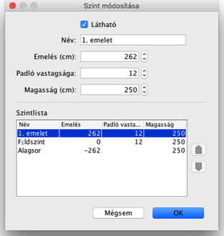

|
M�dos�thatja a szint nev�t, emel�s�t �s magass�g�t, valamitn a padl�s vastags�g�t, ha
dupl�n kattint a szintet jelz� f�lre, vagy az
Alaprajz > Szintek > Szint m�dos�t�sa men�pontban.
A panelen m�dos�thatja a szintek tulajdons�gait, ugyanakkor t�bl�zatban l�thatja az
�sszes szintet. Az �ppen szerkesztett szint elt�r� sz�nnel meg van jel�lve a
t�bl�zatban.

A padl� vastags�ga a 3D n�zetben l�that�, p�ld�ul a padl�ban tal�lhat� lukakn�l
(l�pcs�), illetve f�lemeletekn�l �s erk�lyekn�l.
A szint emel�se lehet pozit�v vagy negat�v sz�m. Ut�bbi esertben a talaj automatikusan
"ki�s�dik" a 3D n�zetben amikor a szintre b�tort helyez el, vagy helyis�get hat�roz
meg, vagy falakkal k�rbez�rt ter�letet hat�roz meg. Ezzel a funkci�val k�sz�thet
uszod�t a f�ldszinten, illetve egy- vagy t�bbszintes pinc�t.
|